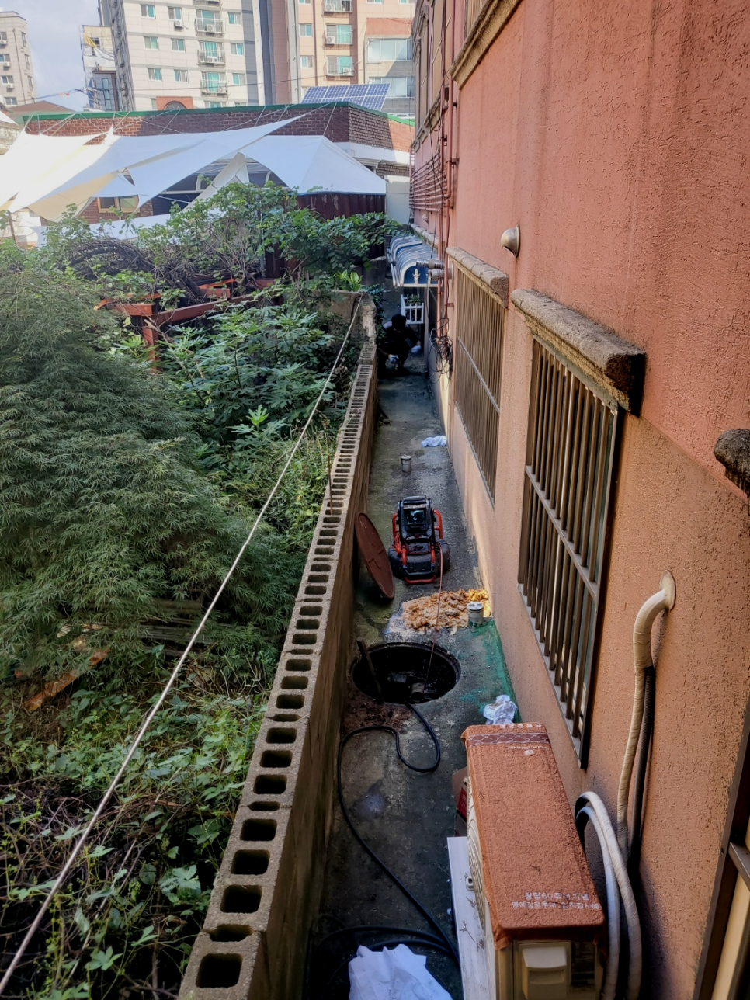
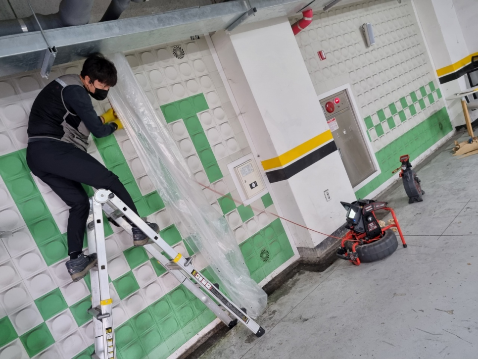
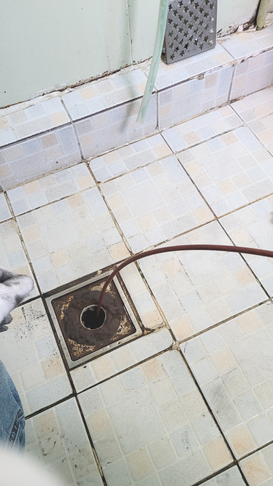
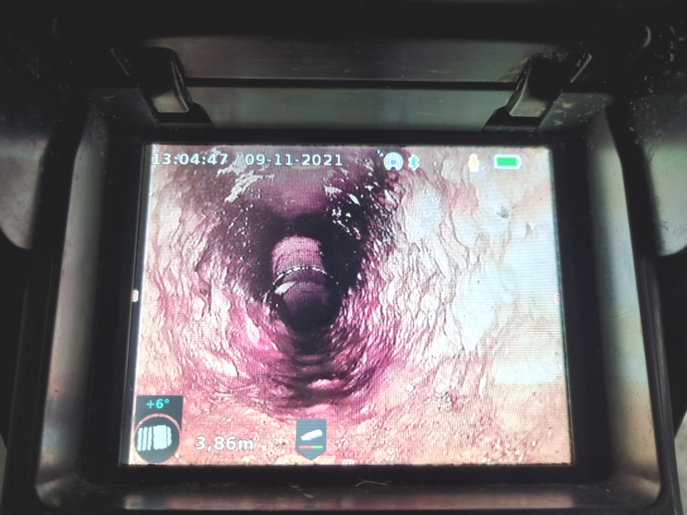
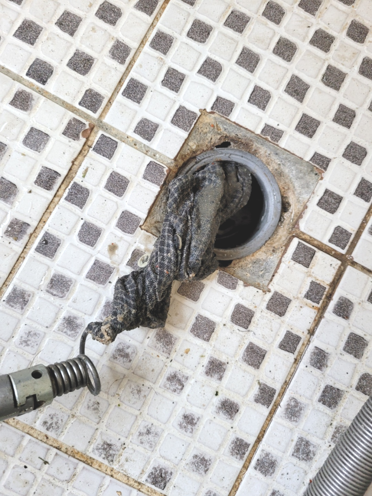
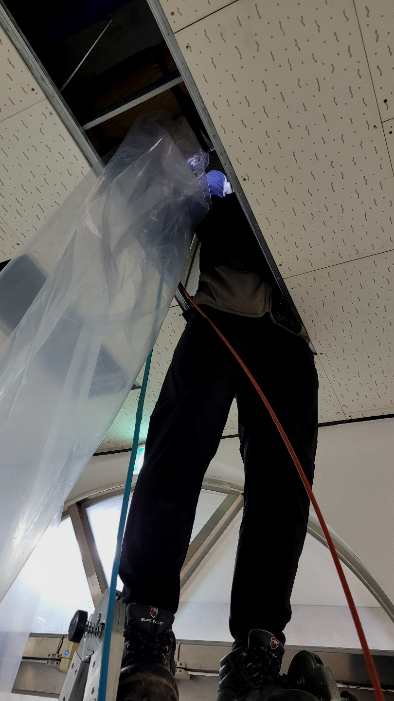

🏠 관양동 세면대배수관막힘 부림동 인덕원 배수구 뚫는곳 수리 설비
용인 싱크대막힘 전문 시공 후기

📋 작업 개요
- 위치: 용인
- 서비스 유형: 싱크대막힘, 변기막힘, 하수구막힘, 배관막힘, 역류해결, 뚫는업체, 배관청소, 고압세척
- 작업 일시: 2024. 3. 20. 18:23
- 업체명: 하수구수사대 (010-5615-2118)
🔍 문제 상황
반갑습니다!
설비전문업체 "하수구수사대"를 찾아주셔서 감사드립니다.
아무래도 전문가를 불러야 하는 것 같기에 신속하게 출장이 되는 주변 전문업체에 전화해서 배수관 뚫는 작업을 요청하셨답니다.
집이 연식이 있는 집이다 보니 이런 오래된 건물들은 대부분 바닥 아래 하수관 배관이 변기와 세면대, 바닥 하수관 배관까지 모두 한 곳으로 이여 져있는 형태로 되어있습니다. 그렇기 때문에 더욱 복잡한 과정으로 이어질 수 있으니 어떠한 원인으로 하수관가 막히게 되었는지 꼼꼼하게 확인하는 과정이 매우 중요합니다.

🔎 원인 분석
💡 전문가 진단: 관양동 세면대배수관막힘 부림동 인덕원 배수구 뚫는곳 수리 설비
빠른 대처가 중요한 이유는 하수관 속 이물질은 시간이 지남에 따라 더욱 심각해지기 때문입니다. 막힘 증상이 발견되었을 때 별일 아니겠지 생각하고 방치해버린다면 계속해서 축적되어 결국 배관을 좁게 만들고 물이 통하는 길을 막게 된답니다.
관양동 세면대배수관막힘 부림동 인덕원 배수구 뚫는곳 수리 설비
수많은 분들이 업체들을이 이용했어도 또 하수막힘증상이 발생되어 반복적으로 더 돈을 내고 청소하게 되는것을 잘못 지여져 있는게 원인이 아닌 똑바로 세척하지 않은 것 때문입니다.
배관을 직접 확인한 후에는 본격적으로 하수관배관 내부에 있는 이물질들과 벽에 있는 덩어리들을 제거를 하기 위해서 하수관 전체적으로 고압세척 과정을 진행하기로 하였습니다. 고압세척은 강한 수압으로 배관 내의 이물질들을 제거하기 때문에 사용 시에 배관의 두께나 내부 길이 등을 고려해서 작업을 해야 합니다.

🔧 작업 과정
배수구를 뚫는 약품이나 뚫어뻥 등등 다양한 방법으로 통해 해결해 보았지만 쉽지않아 결국 하수관업체 알아보셨다고 합니다.요즘엔 업체가 워낙 많아서 어느곳으로 연락을 해야할지 고민스러우셨지만, 저희에게 요청을 하게 되셨다고 잘부탁드린다고 말씀하셨습니다.
퇴수구업체를 선택할 때는 당장의 상황을 해결할 수 있는 곳을 찾는 것도 괜찮은 방법이지만 막힌 퇴수구를 뚫고 재발까지 방지할 수 있는 곳을 찾길 권합니다. 저희는 오랜 경력을 바탕으로 뛰어난 실력과 풍부한 노하우를 갖춘 직원들이 직접 작업합니다. 게다가 모든 과정에서 내시경 검사를 하므로 고객님은 옆에서 실시간으로 퇴수구뚫음 작업을 확인하실 수 있습니다.
이것만으로 끝나는게아닌 방치했을때는 다른세대에 안좋은영향을 주기때문에 유의하셔야하는데요. 퇴수막힘 의뢰자분만 고치신다면 상관없겠지만 이와같은것이 생기게되면 타격주신것을 변상해야되기에 큰피해를입으실텐데요.
부드럽게 풀어진 이물질은 고출력 흡입 장비를 통해 모두 빨아들였고 몇 분간 물을 흘려보내면서 배출구배수관으로 물이 잘 흘러가는지 점검해 주었습니다. 장비가 닿지 않는 부분은 용액과 온수를 흘려보내는 작업으로 청소해 주고 외부로 연결되는 배출구배수관까지 추가 점검도 해드렸습니다.
오늘 방문했던 단독주택에서는 주방하수관부터 실내에 있는 배관들이 곳곳마다 막히게 되어 검사했더니 전체 배관들이 모여서 빠지는 메인배관이 막힌 거더라고요
작업 후 배수관배관이 빈 것을 보면서 확인이 가능하지만 물이 잘 내려가는지 확인을 위해 통수를 해서 잘 빠지는지, 역류나 물이 차오르지는 않는지 이중 삼중의 확인이 필요합니다.
전문가의 노하우를 100% 발휘하여 외부 퇴수에 있던 다량의 이물질도 깔끔하게 청소해 드립니다. 석회질 덩어리를 비롯하여 비닐, 플라스틱과 같은 생활 쓰레기도 섞여 있었습니다. 퇴수 작업을 마친 뒤 다시 화장실로 돌아와서 스케일링을 마무리하였으며 석션기로 찌꺼기 한 톨도 남지지 않고 말끔히 흡입을 해드렸습니다.


✅ 작업 완료
배출구문제 문의하시면 기본적인 금액 정도는 상담 가능하시니 의뢰하고 싶으시거나 더 늦어지기 전에 막힌 하수구를 뚫어보고 싶다면 편한 마음으로 통화 걸어주시면 되십니다.
#하수구막힘 #하수구뚫음 #하수구역류 #씽크대막힘 #싱크대역류 #오수관막힘 #하수구청소 #욕실하수구막힘 #변기막힘 #하수구뚫는비용 #싱크대수리 #화장실막힘




⚠️ 주방 싱크대 배관 막힘 예방 수칙
- ✅ 기름기가 묻은 식기나 프라이팬은 설거지 전 키친타올로 반드시 기름때를 닦아내세요.
- ✅ 주기적으로 싱크대 개수대에 뜨거운 물을 가득 받아 한 번에 내려 배관 내부 기름을 씻어내세요.
- ✅ 배수구 거름망을 미세한 필터로 사용하시고 음식물 찌꺼기가 틈으로 새어 들지 않게 관리하세요.
- ✅ 베이킹소다와 식초를 뜨거운 물과 함께 일주일에 한 번씩 부어주면 배관 살균과 막힘 예방에 좋습니다.
💡 핵심 정리
- 확실한 장비 작업(내시경 점검 및 샤프트 스케일링)으로 원인을 뿌리 뽑습니다.
- 작업 후 1년 이내에 동일한 부위 재발 시 100% 무상 A/S 서비스를 보장합니다.
- 서울 · 경기 · 인천 전 지역에 24시간 언제든 긴급 출동할 수 있도록 항시 대기 중입니다.
❓ 자주 묻는 질문 (FAQ)
🚨 용인 싱크대막힘 문제로 고민이신가요?
정확한 원인 진단과 확실한 시공으로 재발 없는 해결을 약속드립니다.
24시간 긴급 출동 | 서울 · 경기 · 인천 전지역 | 1년 내 재발 시 무상 A/S